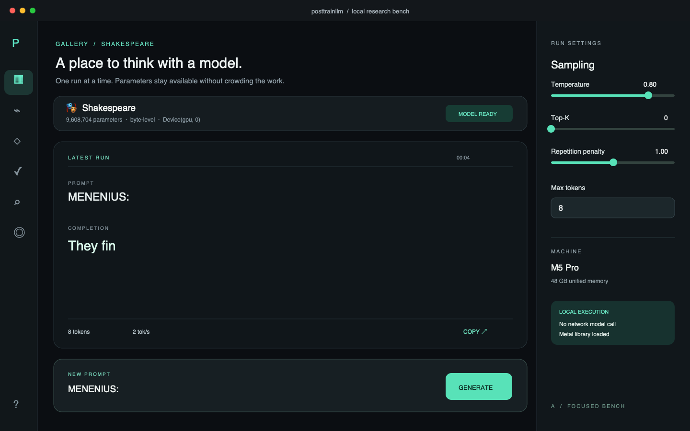

Three frames from three different 25-second launch films. Each uses the actual Mac app, research loop, and measured results. Final format: 16:9 MP4 with captions, ready to attach to the launch post.
Product-led · cinematic · recommended

Film: Mac app hero → training and eval stages → artifact/report reveal → weekly research promise. Slow camera motion, cropped UI details, and clean teal signals. Risk: the app shot could dominate the broader lab story; the final cut must show the factory loop.
Typographic · kinetic · systems-first
Film: the target-to-report chain assembles at speed; each stage opens a real UI or artifact glimpse. Sharp cuts, mono labels, and one continuous teal path. Risk: can feel abstract unless the Mac app and published result appear early.
Editorial · evidence-led · documentary
Film: real scorecard numbers, one setback, and the decision to route the specialist narrowly. The app and site appear as evidence rather than spectacle. Risk: the candid metric story may need a stronger first three seconds for X.